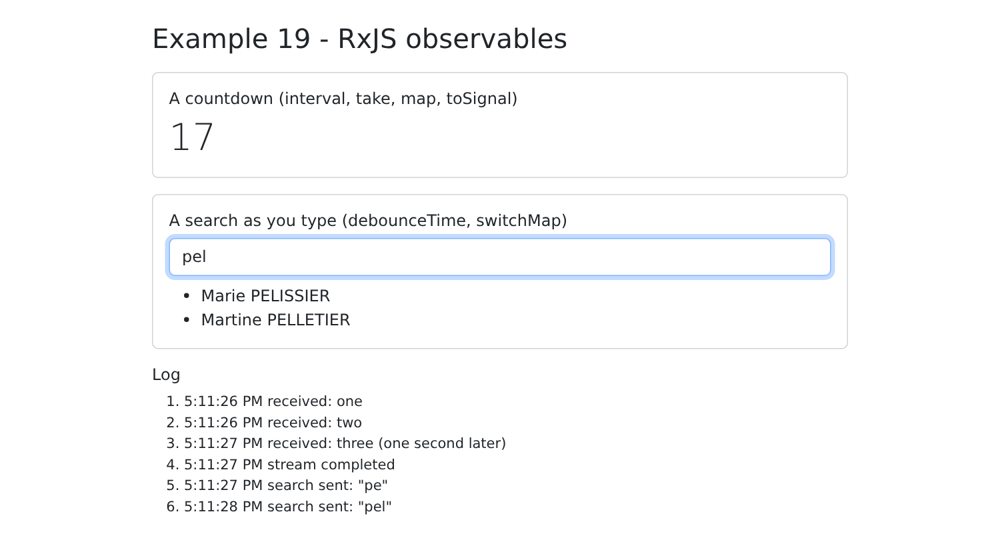
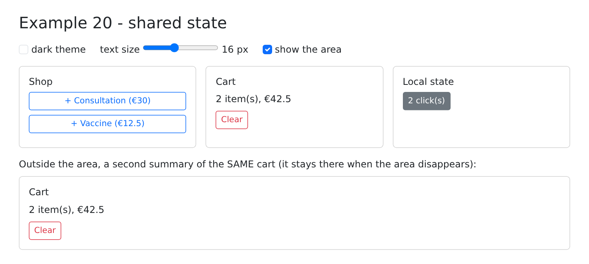

5. Observables y estado compartido
5.1. Ejemplo 19: observables de RxJS
Ya hemos encontrado dos tipos de valores que cambian con el tiempo: los signals, que siempre tienen un valor actual, y las promesas, que entregan un único valor más adelante. [Angular] utiliza un tercer tipo: los observables, proporcionados por la biblioteca [RxJS]. Un observable es un flujo de valores que llegan con el tiempo: pulsaciones de teclas, tics de un temporizador, eventos del enrutador (ejemplo 17), la respuesta de un servidor (ejemplo 22).
Su poder reside en sus operadores: funciones que transforman un flujo en otro (filtrar, esperar, descartar una solicitud caducada, etc.). Este ejemplo presenta los principales en tres escenarios.
| // =========================================================================
// 19-rxjs/src/app/app.ts - los observables de la biblioteca RxJS
// -------------------------------------------------------------------------
// Un OBSERVABLE es un FLUJO de valores, que llegan con el tiempo (las
// pulsaciones de teclas, los ticks de un temporizador, la respuesta de un servidor...).
// Angular los usa mucho: el cliente HTTP (ejemplo 22) y el enrutador
// (ejemplo 17) devuelven observables.
// - observable.subscribe(function): nos SUSCRIBIMOS; la función recibe
// cada valor. No ocurre nada mientras nadie esté suscrito;
// - observable.pipe(op1, op2...): un flujo NUEVO, transformado por
// OPERADORES (map, filter, debounceTime, switchMap...);
// - toSignal(observable): un signal cuyo valor es el último valor recibido
// (suscripción y cancelación de suscripción automáticas).
// =========================================================================
import { Component, DestroyRef, inject, signal } from '@angular/core';
import { takeUntilDestroyed, toSignal } from '@angular/core/rxjs-interop';
import { debounceTime, delay, distinctUntilChanged, filter, interval, map, Observable, of, Subject, switchMap, take, tap } from 'rxjs';
const DOCTORS = ['Marie PELISSIER', 'Paul TATOU', 'Sophie DUPONT', 'Jacques DURAND', 'Martine PELLETIER'];
@Component({
selector: 'app-root',
templateUrl: './app.html',
})
export class App {
protected readonly log = signal<string[]>([]);
// 2. un temporizador: 0, 1, 2... cada segundo; take(20): 20 valores
// y luego el flujo se completa; map: cada valor se transforma
private readonly seconds$ = interval(1000).pipe(
take(20),
map((n) => 20 - n - 1),
);
// toSignal: la cuenta regresiva, como signal
protected readonly countdown = toSignal(this.seconds$, { initialValue: 20 });
// 3. una búsqueda "mientras se escribe": un Subject es un observable
// al que EMPUJAMOS valores nosotros mismos (next)
private readonly inputs = new Subject<string>();
protected readonly results = toSignal(
this.inputs.pipe(
map((text) => text.trim().toLowerCase()),
debounceTime(400), // esperamos 400 ms sin pulsación de tecla
distinctUntilChanged(), // ignoramos un texto idéntico al anterior
filter((text) => text.length >= 2),
tap((text) => this.trace(`search sent: "${text}"`)),
// switchMap: una búsqueda por texto; si llega un nuevo texto
// antes de la respuesta, la búsqueda anterior se ABANDONA
switchMap((text) => this.search(text)),
),
{ initialValue: [] as string[] },
);
constructor() {
// 1. un observable construido a mano: emite tres valores y luego se completa
const threeValues = new Observable<string>((subscriber) => {
subscriber.next('one');
subscriber.next('two');
setTimeout(() => {
subscriber.next('three (one second later)');
subscriber.complete();
}, 1000);
});
// takeUntilDestroyed: la suscripción se detiene si el componente desaparece
threeValues.pipe(takeUntilDestroyed(inject(DestroyRef))).subscribe({
next: (value) => this.trace(`received: ${value}`),
complete: () => this.trace('stream completed'),
});
}
protected onInput(text: string): void {
this.inputs.next(text);
}
// un "servidor" simulado: la respuesta llega tras un retraso aleatorio
private search(text: string): Observable<string[]> {
const found = DOCTORS.filter((m) => m.toLowerCase().includes(text));
return of(found).pipe(delay(200 + Math.random() * 600));
}
private trace(message: string): void {
this.log.update((j) => [...j, `${new Date().toLocaleTimeString()} ${message}`]);
}
}
|
- línea 18: las funciones y operadores utilizados se importan todos de [rxjs];
Un observable construido a mano:
- líneas 57–64: un observable se construye a partir de una función, que se llama para cada suscriptor. Emite valores mediante [next] (líneas 58, 59, 61) y luego señala el final del flujo mediante [complete] (línea 62);
- línea 66: [subscribe]: el código se suscribe al flujo. No ocurre nada hasta que alguien se suscribe: la función de las líneas 57–64 se ejecuta solo en ese momento. El objeto pasado a [subscribe] especifica qué hacer con cada valor (línea 67) y con el final del flujo (línea 68);
- línea 66: [pipe] encadena operadores. [takeUntilDestroyed] detiene la suscripción si el componente desaparece: una suscripción olvidada seguiría ejecutándose para un componente que ya no existe.
Una cuenta regresiva:
- Línea 31: [interval(1000)] emite 0, 1, 2... cada segundo, indefinidamente;
- Línea 32: [take(20)] conserva solo los primeros veinte valores y luego termina el flujo;
- línea 33: [map] transforma cada valor: 0, 1, 2... se convierten en 19, 18, 17...;
- línea 36: [toSignal] convierte el flujo en un signal, que toma el último valor recibido y que la plantilla lee como cualquier otro signal. [toSignal] se suscribe al flujo y cancela la suscripción cuando el componente desaparece. [initialValue]: el valor del signal antes del primer valor del flujo.
Por convención, el nombre de una variable que contiene un observable termina con [$] (línea 31).
Una búsqueda mientras se escribe:
Este es un ejemplo clásico de observables: queremos buscar médicos cuyos nombres contengan el texto que se está escribiendo, sin enviar una solicitud al servidor con cada pulsación de tecla, y sin el riesgo de que una respuesta lenta sobrescriba una más reciente.
- Línea 40: un
***[Subject] es un observable en el que *introducimos los valores nosotros mismos, mediante ***[next]***: línea 73, con cada pulsación de tecla (la plantilla llama a [onInput] en cada evento [input]);
- línea 43: el texto se limpia (se eliminan los espacios sobrantes y se pasa a minúsculas);
- línea 44: [debounceTime(400)] solo emite un valor si no llega ningún otro durante 400 ms: mientras el usuario escribe, no se envía nada;
- línea 45: [distinctUntilChanged] ignora un valor idéntico al anterior (“pel”, luego “pelx” borrado de inmediato: de nuevo “pel”);
- línea 46: [filter] retiene solo las cadenas de texto de al menos dos letras;
- línea 47: [tap] realiza una acción sin modificar el flujo: en este caso, una línea en el log;
- línea 50: [switchMap] reemplaza cada texto por el resultado de su búsqueda (líneas 77–80: un servidor simulado que responde tras un retraso aleatorio). Si llega un nuevo texto antes de la respuesta, la búsqueda anterior se abandona: su respuesta nunca se mostrará. Con el cliente HTTP real, la solicitud incluso se cancelaría;
- línea 52: el signal [results] es una lista vacía mientras ninguna búsqueda haya tenido éxito.
| <div class="container py-4" style="max-width: 720px">
<h1 class="h3 mb-3">Example 19 - RxJS observables</h1>
<div class="card p-3 mb-3">
<h2 class="h6">A countdown (interval, take, map, toSignal)</h2>
<p class="display-6 mb-0">{{ countdown() }}</p>
</div>
<div class="card p-3 mb-3">
<h2 class="h6">A search as you type (debounceTime, switchMap)</h2>
<input class="form-control mb-2" placeholder="at least two letters: pel, dur..." (input)="onInput(field.value)" #field>
<ul class="mb-0">
@for (r of results(); track r) {
<li>{{ r }}</li>
} @empty {
<li class="text-muted">no result</li>
}
</ul>
</div>
<h2 class="h6">Log</h2>
<ol class="small">
@for (line of log(); track $index) {
<li>{{ line }}</li>
}
</ol>
</div>
|
- línea 6: la cuenta regresiva, un signal;
- línea 11: [#field] es una variable de plantilla: hace referencia al elemento [<input>], cuyo valor se pasa con cada pulsación de tecla;
- líneas 13–17: los resultados de la búsqueda.
[npm start 19-rxjs]; escriba “pe” y, un poco después, “l”:

El log muestra ambas búsquedas: “pe” (enviada tras 400 ms de silencio) y luego “pel”.
¿Signals u observables? Ambos coexisten en [Angular], con funciones distintas:
| | Signal | Observable |
Valor | tiene siempre un valor actual, que se puede leer en cualquier momento | emite valores a lo largo del tiempo; no hay un valor “actual” |
Uso | el estado de la aplicación (lo que se muestra) | eventos y operaciones asíncronas (solicitudes, temporizadores, pulsaciones de teclas) |
Suscripción | automática (plantillas, [computed], [effect]) | explícita ([subscribe]), o mediante [toSignal] |
Características clave | Simplicidad | Operadores: esperar, combinar, abandonar |
La tendencia en [Angular] es almacenar el estado en signals y reservar los observables para los casos en que sus operadores resultan útiles. [toSignal] y [toObservable] permiten pasar de uno a otro. En el caso de estudio, las solicitudes HTTP se convertirán en promesas ([firstValueFrom], ejemplo 22), y el estado se encapsulará en signals; solo los eventos del enrutador se escucharán como observables.
5.2. Ejemplo 20: un estado compartido
Con frecuencia, varios componentes necesitan los mismos datos: el usuario conectado (la barra de navegación, los guardias, las páginas), los mensajes que se deben mostrar y el idioma seleccionado. ¿Dónde se deben almacenar estos datos? El curso de [NestJS] abordó la misma pregunta del lado del servidor (ámbitos de aplicación, solicitud y sesión). Este ejemplo la adapta al navegador, con tres “ámbitos”:
- el estado local de un componente, almacenado en sus propias variables: desaparece cuando el componente se destruye;
- el estado de un servicio raíz: compartido por todos los componentes, sobrevive a su eliminación pero no a una recarga de la página (F5), que reinicia la aplicación;
- el estado almacenado en el localStorage del navegador: sobrevive a una recarga de la página e incluso al cierre del navegador.
| 20-shared-state/src/app/
├── state/
│ ├── cart.service.ts a shared state
│ └── preferences.service.ts a state that survives F5
├── components/
│ ├── shop.ts adds to the cart
│ ├── cart-summary.ts displays the cart
│ └── local-counter.ts a local state
├── app.ts
└── app.html
|
5.2.1. Un servicio que contiene el estado
| // =========================================================================
// 20-shared-state/src/app/state/cart.service.ts - un ESTADO COMPARTIDO
// -------------------------------------------------------------------------
// Un servicio raíz (providedIn: 'root') que contiene signals es un
// "store": UNA sola instancia para toda la aplicación, que
// todos los componentes comparten. Organización habitual:
// - el ESTADO: signals PRIVADOS, modificables solo por el servicio;
// - signals de SOLO LECTURA (asReadonly) y computeds, leídos por
// los componentes;
// - métodos (las "acciones"), los únicos que modifican el estado.
// El servicio vive tanto como vive la aplicación: sobrevive a la eliminación de un
// componente... pero no a la recarga de la página (F5), que reinicia
// la aplicación. (No se necesita una biblioteca adicional, como Pinia
// para Vue.js: bastan los servicios y los signals.)
// =========================================================================
import { computed, Injectable, signal } from '@angular/core';
export interface Item {
label: string;
price: number;
}
@Injectable({ providedIn: 'root' })
export class CartService {
private readonly _items = signal<Item[]>([]);
readonly items = this._items.asReadonly();
readonly count = computed(() => this._items().length);
readonly total = computed(() => this._items().reduce((s, a) => s + a.price, 0));
add(item: Item): void {
this._items.update((a) => [...a, item]);
}
clear(): void {
this._items.set([]);
}
}
|
Un servicio raíz que contiene signals actúa como un almacén ([store]): una única instancia, compartida por toda la aplicación. Se organiza en tres partes:
- línea 26: el estado, en un signal privado: ningún componente puede modificarlo directamente;
- líneas 28–30: lo que los componentes leen: el estado de solo lectura ([asReadonly]) y los valores calculados ([computed]);
- líneas 32–38: las acciones, los únicos métodos que pueden modificar el estado.
Este enfoque tiene una ventaja clave: cuando un carrito de compras es inválido, las únicas modificaciones posibles ocurren dentro de los métodos del servicio. Con [Vue.js], normalmente se usa una biblioteca ([Pinia]) para este fin; con [Angular], bastan los servicios y los signals.
5.2.2. Componentes que lo comparten
| // 20-shared-state/src/app/components/shop.ts - AGREGA al carrito compartido
import { Component, inject } from '@angular/core';
import { Item, CartService } from '../state/cart.service';
@Component({
selector: 'app-shop',
template: `
<div class="card p-3 h-100">
<h2 class="h6">Shop</h2>
@for (p of products; track p.label) {
<button class="btn btn-sm btn-outline-primary mb-2" (click)="cart.add(p)">+ {{ p.label }} (€{{ p.price }})</button>
}
</div>
`,
})
export class Shop {
protected readonly cart = inject(CartService);
protected readonly products: Item[] = [
{ label: 'Consultation', price: 30 },
{ label: 'Vaccine', price: 12.5 },
];
}
|
- línea 17: el componente inyecta el servicio;
- línea 11: llama a una acción.
| // 20-shared-state/src/app/components/cart-summary.ts - LEE el mismo carrito
import { Component, inject } from '@angular/core';
import { CartService } from '../state/cart.service';
@Component({
selector: 'app-cart-summary',
template: `
<div class="card p-3 h-100">
<h2 class="h6">Cart</h2>
<p class="mb-2">{{ cart.count() }} item(s), €{{ cart.total() }}</p>
<button class="btn btn-sm btn-outline-danger align-self-start" [disabled]="cart.count() === 0"
(click)="cart.clear()">Clear</button>
</div>
`,
})
export class CartSummary {
protected readonly cart = inject(CartService);
}
|
- línea 10: lee los valores calculados del mismo servicio;
- línea 12: llama a otra acción.
Los dos componentes no se conocen entre sí: no hay entradas ni salidas entre ellos. Se comunican a través del servicio.
| // 20-shared-state/src/app/components/local-counter.ts - un estado LOCAL, que desaparece con el componente
import { Component, signal } from '@angular/core';
@Component({
selector: 'app-local-counter',
template: `
<div class="card p-3 h-100">
<h2 class="h6">Local state</h2>
<button class="btn btn-sm btn-outline-secondary align-self-start" (click)="clicks.set(clicks() + 1)">{{ clicks() }} click(s)</button>
</div>
`,
})
export class LocalCounter {
protected readonly clicks = signal(0);
}
|
- línea 14: un estado local: cada instancia del componente tiene su propio contador, que desaparece cuando la instancia se destruye.
5.2.3. Un estado que sobrevive a una recarga de la página
| // =========================================================================
// 20-shared-state/src/app/state/preferences.service.ts - un estado que sobrevive a F5
// -------------------------------------------------------------------------
// Para que un dato sobreviva a la recarga de la página, o al cierre
// del navegador, debe almacenarse EN el navegador: localStorage (un
// pequeño diccionario clave -> cadena, propio de cada sitio).
// - al iniciar, el servicio vuelve a leer localStorage;
// - un effect reescribe localStorage en cada cambio.
// NUNCA guardamos allí datos sensibles (contraseña, token): cualquier script
// de la página puede leer localStorage.
// =========================================================================
import { effect, Injectable, signal } from '@angular/core';
const KEY = 'example20.preferences';
export interface Preferences {
dark: boolean;
size: number; // tamaño del texto, en px
}
function read(): Preferences {
try {
return { dark: false, size: 16, ...JSON.parse(localStorage.getItem(KEY) ?? '{}') };
} catch {
return { dark: false, size: 16 }; // contenido ilegible: valores por defecto
}
}
@Injectable({ providedIn: 'root' })
export class PreferencesService {
readonly preferences = signal<Preferences>(read());
constructor() {
effect(() => localStorage.setItem(KEY, JSON.stringify(this.preferences())));
}
// una preferencia cambia: reemplazamos el objeto (el signal lo detecta)
update(change: Partial<Preferences>): void {
this.preferences.update((p) => ({ ...p, ...change }));
}
}
|
- línea 15: la clave bajo la cual se almacenan las preferencias en [localStorage], un pequeño diccionario de clave a cadena específico de cada sitio;
- líneas 22–28: al iniciar, se leen las preferencias guardadas. Los valores predeterminados se complementan con los que se han guardado (mediante el operador [...]); el contenido ilegible se ignora (línea 26);
- línea 32: las preferencias, en un signal;
- línea 35: un efecto (ejemplo 13) reescribe el [localStorage] cada vez que el signal cambia: no hay que pensar en ello en cada acción;
- líneas 39–41: la acción que modifica una o varias preferencias ([Partial<Preferences>]: un objeto en el que cada propiedad es opcional). Reemplazamos el objeto en lugar de modificarlo: un signal solo detecta cambios de valor.
Los datos sensibles (contraseñas, tokens de inicio de sesión) nunca se almacenan en el [localStorage]: cualquier script ejecutado por la página puede leerlos. Por eso el token de inicio de sesión de la aplicación [RdvMedecins] se almacenará en una cookie, inaccesible para el código [JavaScript].
5.2.4. La página
| // =========================================================================
// 20-shared-state/src/app/app.ts - tres "ámbitos" de datos del lado del cliente
// -------------------------------------------------------------------------
// La misma pregunta que el ejemplo 23 del curso de NestJS (ámbito de aplicación,
// de petición, de cliente), transpuesta al navegador:
// - el estado LOCAL de un componente (LocalCounter) desaparece con él;
// - el estado de un SERVICIO raíz (el carrito) lo comparten todos los
// componentes y sobrevive a su eliminación - pero no a F5;
// - el estado guardado en localStorage (las preferencias) sobrevive a F5 y al
// cierre del navegador.
// Desmarque y vuelva a marcar "mostrar el área", luego recargue la página: compare.
// =========================================================================
import { Component, inject, signal } from '@angular/core';
import { PreferencesService } from './state/preferences.service';
import { Shop } from './components/shop';
import { CartSummary } from './components/cart-summary';
import { LocalCounter } from './components/local-counter';
@Component({
selector: 'app-root',
imports: [Shop, CartSummary, LocalCounter],
templateUrl: './app.html',
})
export class App {
protected readonly prefs = inject(PreferencesService);
protected readonly areaVisible = signal(true);
}
|
- línea 27: un estado local del componente raíz: ¿se muestra el área?
| @let p = prefs.preferences();
<div class="min-vh-100" [class.bg-dark]="p.dark" [class.text-light]="p.dark" [style.font-size.px]="p.size">
<div class="container py-4">
<h1 class="h3 mb-3">Example 20 - shared state</h1>
<div class="d-flex flex-wrap gap-4 mb-3">
<label class="form-check-label">
<input #dark type="checkbox" class="form-check-input" [checked]="p.dark"
(change)="prefs.update({ dark: dark.checked })"> dark theme
</label>
<label>
text size
<input #size type="range" min="12" max="22" [value]="p.size"
(input)="prefs.update({ size: +size.value })"> {{ p.size }} px
</label>
<label class="form-check-label">
<input #area type="checkbox" class="form-check-input" [checked]="areaVisible()"
(change)="areaVisible.set(area.checked)"> show the area
</label>
</div>
@if (areaVisible()) {
<div class="row g-3 text-body">
<div class="col-md-4"><app-shop /></div>
<div class="col-md-4"><app-cart-summary /></div>
<div class="col-md-4"><app-local-counter /></div>
</div>
}
<p class="mt-3 mb-2">Outside the area, a second summary of the SAME cart (it stays there when the area disappears):</p>
<div class="text-body"><app-cart-summary /></div>
</div>
</div>
|
- línea 1: [@let] declara una variable de plantilla: [p] evita repetir [prefs.preferences()];
- Línea 2: las preferencias se aplican a toda la página: [[class.bg-dark]] establece la clase si el valor es verdadero; [[style.font-size.px]] establece un tamaño en píxeles;
- Líneas 7–8 y 12–13: cada cambio activa la acción [update];
- Líneas 20–26: el área que contiene los tres componentes, se muestre o no;
- línea 28: un segundo resumen del mismo carrito de compras, fuera del área.
[npm start 20-shared-state]; se agregan dos artículos al carrito de compras y se hace clic dos veces en el contador local:

Luego se pueden verificar los tres ámbitos:
- desmarque y vuelva a marcar “show the area”: el contador local se ha reiniciado a 0 (el componente se volvió a crear), el carrito de compras está intacto (el servicio sobrevivió);
- seleccione el tema oscuro y luego recargue la página (F5): el carrito de compras está vacío (la aplicación se reinició), el tema oscuro se conserva ([localStorage] ha sobrevivido).